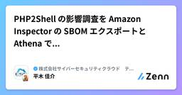
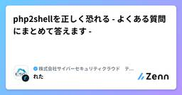

株式会社サイバーセキュリティクラウド テックブログのフィード
https://zenn.dev/p/cscloud_blog
「世界中の人々が安心安全に使えるサイバー空間を創造する」 この理念を掲げ、世界有数のサイバー脅威インテリジェンスとAI技術を活用した、WEBアプリケーションのセキュリティサービスを全世界に向けて提供しています。
フィード

今後のセキュリティの考え方 228
228
株式会社サイバーセキュリティクラウド テックブログのフィード
どうもサイバーセキュリティクラウド 脅威インテリジェンスグループの西川です。本日のウェビナー（【緊急開催セミナー】重大脆弱性を狙うサイバー攻撃への備え ～パッチ適用までのリスクを低減する「仮想パッチ」とは～）にお越しくださった皆様ありがとうございます。当日は時間の関係でお伝えしきれなかった、今後のセキュリティの考え方について、改めて書いてみます。特に AWS 環境の話をしていきますが、すべての環境において共通です。 アタックサーフェスや管理面を減らす管理面を減らすというのはどういうことかというと、例えばポートを閉じるとかです。意外に思われるかもしれませんが、例えば Amazo...
3日前

PHP2Shell の影響調査を Amazon Inspector の SBOM エクスポートと Athena で組織横断で検証してみた 1
株式会社サイバーセキュリティクラウド テックブログのフィード
こんにちは、CSC の CloudFastener というプロダクトで TAM のポジションで働いている平木です！2026 年 10 月に公開された PHP の脆弱性「PHP2Shell」（CVE-2026-109618 / CVE-2026-109619）が話題になりました。こうした広く使われるソフトウェアの脆弱性が出たとき、まず知りたいのは「組織のどこに PHP が入っていて、どれが影響を受けるのか」です。Amazon Inspector には、スキャン対象リソースの SBOM（ソフトウェア部品表）を S3 にエクスポートする機能があります。AWS のブログでも、エクスポートし...
4日前

php2shellを正しく恐れる - よくある質問にまとめて答えます -
株式会社サイバーセキュリティクラウド テックブログのフィード
はじめに10/22 の夜に修正がリリースされた、phpの任意コード実行が可能となる脆弱性php2shellが、連日話題になっています。非常に危険な脆弱性ですが、正確な情報が流れているとは言いがたい状況です。今回は、公開前から行なっていた弊社での調査をもとに、php2shellの危険度をまとめます。なお、悪用防止の観点から、技術的な詳細はこの記事では触れません。 php2shellについてphp2shellは、PHPで見つかった二つの脆弱性「CVE-2026-109618」「CVE-2026-109619」の総称です。phpで公開しているほぼすべてのサーバが、この攻撃に...
7日前

NODE_OPTIONSがClaude Codeを閉じ込めたので、深掘りしてみた
株式会社サイバーセキュリティクラウド テックブログのフィード
こんにちは！サイバーセキュリティクラウドでソフトウェアエンジニアをしているTateです。普段は、社内の開発環境とセキュリティまわりの整備に取り組んでいます。このブログは、ある日Claude Code(以下claude)が主要な接続先につながらなくなった原因を調べた結果となります。端末で証明書の設定をしている開発者の方は、ぜひ参考にしてください！!3行で言うとNODE_OPTIONS=--use-system-caが設定されていると、claudeはパブリック認証局証明書を使わなくなり、AWS Bedrockに繋がらなくなります。Node.jsではこのフラグは証明書を「足す」...
11日前
JPCERT/CCが挙げた4つの手口を自分のシステムで確かめる
株式会社サイバーセキュリティクラウド テックブログのフィード
はじめに国内企業による不正アクセスや個人情報漏えいの公表が、今年に入って大きく増えています。マクニカの集計では、国内法人のWebシステムを通じた漏えいの公表は、2024年が62件、2025年が84件でした。2026年は10月6日の時点で119件あり、そのうち81件は7月以降の公表です（マクニカ）。こうした状況の中、JPCERT/CCは10月8日、国内組織で相次ぐ不正アクセスについて注意喚起を公開しました。翌9日には内容が更新されています（JPCERT/CC）。国内の事案で確認されている手口が4つ挙がっていて、対策もまとめられています。読んだあとに「自分の担当しているシステムはど...
12日前
AWS Lambda Web FunctionsでImpossible Location検知の課題をまとめて解決！ + 昨今の攻撃への有効性
株式会社サイバーセキュリティクラウド テックブログのフィード
これまで下記の 2 本の記事で、Amazon CloudFront を使ってセッションハイジャックを検知・ブロックする仕組みを紹介してきました。CloudFront Functions + KVS 編：エッジで高速に検証できる。ただしアプリ改修が必要で、KVS の 5MB 上限・TTL なし・結果整合と付き合う必要があるLambda@Edge 編：アプリ無改修。ただし署名付き Cookie なのでセッション単位の失効ができないCloudFront Functions 編の最後で、結論として、CloudFront Functions のエッジ完結という利点を活かすには K...
14日前
GuardDuty のカスタム検知ルールが Runtime Monitoring に対応したので実際に検知させてみた
株式会社サイバーセキュリティクラウド テックブログのフィード
こんにちは、CSC の CloudFastener というプロダクトで TAM のポジションで働いている平木です！先日、GuardDuty の Custom Detection Rules（カスタム検知ルール）について記事を書きました。https://zenn.dev/cscloud_blog/articles/guardduty-custom-detection-rules-use-caseこの時点では CloudTrail の管理イベント、つまり AWS API の操作だけが検知対象でした。今回のアップデートで Runtime Monitoring のルールが追加され、OS 内...
17日前
Security Hub にリソースの重要度（Criticality）が追加され、Exposure の優先度付けに使われるようになりました
株式会社サイバーセキュリティクラウド テックブログのフィード
こんにちは、CSC の CloudFastener というプロダクトで TAM のポジションで働いている平木です！Security Hub の Exposure を見ていて、「この Critical、検証環境のリソースなんだけどな…」と思ったことはないでしょうか。同じ脆弱性を持つ EC2 インスタンスでも、決済処理を担う本番サーバーと検証用に放置されたサンドボックスとでは、対応の緊急度がまったく違います。ただ、これまでの Exposure finding では、この「ビジネス上どれだけ大事なリソースか」という観点は明示的には扱われていませんでした。そんな中、2026 年 10 月...
17日前
Security Hub CSPM に金融業界向けのセキュリティ基準「CRI Profile v2.2」が追加されました
株式会社サイバーセキュリティクラウド テックブログのフィード
こんにちは、CSC の CloudFastener というプロダクトで TAM のポジションで働いている平木です！皆さんは Security Hub CSPM のセキュリティ基準を何種類有効化していますか？AWS 基礎セキュリティのベストプラクティス（FSBP）や CIS AWS Foundations Benchmark を有効化している方は多いと思いますが、2026 年 10 月 14 日に Security Hub CSPM へ新しいセキュリティ基準 CRI Profile v2.2 が追加されました。https://docs.aws.amazon.com/securityh...
18日前
GuardDuty RDS 保護に RDS Data Activity Monitoring が増え、クエリの振る舞い検知が可能になりました
株式会社サイバーセキュリティクラウド テックブログのフィード
こんにちは、CSC の CloudFastener というプロダクトで TAM のポジションで働いている平木です！皆さんは GuardDuty の RDS 保護（RDS Protection）を使用していますか？これまで RDS 保護は、データベースへの ログインアクティビティ を分析し、不審なログインやブルートフォースを検知する機能でした。そんな中、GuardDuty のコンソールを見ていたら、RDS 保護の設定に「RDS Data Activity Monitoring」という新しい項目が追加されていました。今回はこの RDS Data Activity Monitorin...
24日前
セキュリティのために入れたSIEMがSLOを守っていた話｜Sapporo.sre #0 LT登壇レポート
株式会社サイバーセキュリティクラウド テックブログのフィード
Sapporo.sre #0で登壇してきました！🎉こんにちは、川崎（@yuta_k0911）です。サイバーセキュリティクラウドでセキュリティインテリジェンス本部 本部長 / VP of Engineering Operationsをしています。2026年9月18日（金）に開催された Sapporo.sre #0 で、「SREの視点で考えるSIEM活用術 〜AWS環境でのセキュリティ強化〜」というタイトルでLTをしてきました！札幌でSREの勉強会が立ち上がる、その記念すべき初回に登壇させていただけて、とても嬉しかったです！実は地方で開催されるSREのイベントに参加したのはこれ...
1ヶ月前
AWS DevOps Agent の堅牢性
株式会社サイバーセキュリティクラウド テックブログのフィード
どうもセキュリティエンジニアの西川です。シルバーウィーク楽しみましたか？私は今回ご紹介する AWS DevOps Agent のセキュリティについてほとんどの時間を使いました。（汗）ということで、ぜひご覧ください（笑）と言いつつも、記事を読む前に Elevated Role や Directed Actions については事前に調べていただいた方がよいです。最近出たものなので、特徴を理解していると話が入ってきやすいかと思います。Elevated Role の説明を合わせて書こうかと思ったのですが、その解説だけで一つの記事になりそうだったので諦めました。。参考: https://doc...
1ヶ月前
DevOps Agentに『脆弱性のあるパッケージを直して』と頼んだら、SSM Run Commandでアップグレードしてくれた話
株式会社サイバーセキュリティクラウド テックブログのフィード
こんにちは、CSC の CloudFastener というプロダクトで TAM のポジションで働いている平木です！これまで 2 回、AWS DevOps Agent と GuardDuty を連携させた検証記事を書いてきました。https://zenn.dev/cscloud_blog/articles/devops-agent-guardduty-integrationhttps://zenn.dev/cscloud_blog/articles/devops-agent-guardduty-directed-actions前回の記事では、エージェントアクション（Directed...
2ヶ月前
【HITCON 2026 参加レポート】Day2 セッションから改めて感じた"確認"することの重要さ
株式会社サイバーセキュリティクラウド テックブログのフィード
はじめにこんにちは、日々セキュリティエンジニアとして従事している新卒2年目です。先日、台湾で開催されたセキュリティカンファレンス「HITCON 2026」に初めて参加してきました。本記事では、Day2で聴講したセッションの概要や感想などを紹介しようと思います。Day2で聴講したセッションのタイトル一覧です。Out of LINE：QR Code to Wormable RCE in LINE ClientValidated Then Rebound: Bypassing PAC and Proxy IP ACLs via DNS Answer Desynchroniza...
2ヶ月前
【HITCON 2026 参加レポート】Day1 セッションから感じたAI時代のハッカーたちのリアル
株式会社サイバーセキュリティクラウド テックブログのフィード
はじめにこんにちは、日々セキュリティエンジニアとして従事している新卒2年目です。先日、台湾で開催されたセキュリティカンファレンス「HITCON 2026」に初めて参加してきました。本記事では、Day1で聴講したセッションの概要や感想などを紹介しようと思います。Day1で聴講したセッションのタイトル一覧です。Vulnerability Disclosure in the Age of AI[UnPwn2Own Berlin 2026 / $70,000] Agent2Shell: Pre-Prompt RCEs in Claude Code, Cursor, and Ge...
2ヶ月前
AWS SSM Agent の脆弱性(CVE-2026-89049) の被害があったかどうかを CloudTrail で確認する方法
株式会社サイバーセキュリティクラウド テックブログのフィード
どうもサイバーセキュリティクラウドで脅威インテリジェンスをしている西川です。今日は表題の CVSS v3.1 における CVSS 9.9(Critical) の脆弱性について実際に脆弱性が悪用された場合にどういうログが CloudTrail に出るのかを検証し、皆様の環境で被害が発生していないか確認していただくためにブログを執筆いたしました。ただこのスコアほど影響度は高くないというのが個人的な印象です。それらについてもまとめているので最後までご覧ください。 CVE-2026-89049 とは2026年9月10日に AWS は AWS Systems Manager Agent（以...
2ヶ月前
【HITCON 2026 参加レポート】ハッカーが集うカンファレンスの雰囲気や驚いたこと
株式会社サイバーセキュリティクラウド テックブログのフィード
はじめにこんにちは、日々セキュリティエンジニアとして従事している新卒2年目です。先日、台湾で開催されたセキュリティカンファレンス「HITCON 2026」に初めて参加してきました。本記事では、驚いたことやセッション全体を通して感じたことなど、HITCONらしさに関する内容をまとめているため技術的な要素は少なめです。セッションの専門的な内容が知りたい方は別の記事にて紹介しようと思いますので、そちらを参照してください。Day1https://zenn.dev/cscloud_blog/articles/hitcon2026-report02Day2https://...
2ヶ月前
NIST の「人間中心のサイバーセキュリティ（HCC）」をクラウドセキュリティ運用に当てはめて考える
株式会社サイバーセキュリティクラウド テックブログのフィード
こんにちは、CSC の CloudFastener というプロダクトで TAM のポジションで働いている平木です！2026 年 8 月 12 日、NIST が「人間中心のサイバーセキュリティ（Human-Centered Cybersecurity、以下 HCC）」についてのコンセプトペーパーを公開しました。ITL（Information Technology Laboratory）が出した 18 ページの文書です。https://csrc.nist.gov/projects/human-centered-cybersecurity/human-centered-cybersecur...
2ヶ月前
[社内勉強会資料公開] Claude Code 入門 #9 — サブエージェントとAgent Teamで並列化する
株式会社サイバーセキュリティクラウド テックブログのフィード
こんにちは、CSC の CloudFastener というプロダクトで TAM のポジションで働いている平木です！CSC社内で開催している「CloudFastener の TAM(テクニカルアカウントマネージャー)向けに、Claude Codeを初歩から実践まで学ぶ勉強会」の第9回資料です。前回はMCP(外部ツール・サービスとの連携)を扱い、調査からレポート作成までを一気通貫でClaude Codeに任せる方法を学びました。https://zenn.dev/cscloud_blog/articles/csc-claude-code-study-session-08第9回は、「もう一...
2ヶ月前
守りの組織を事業貢献に結びつけた話｜Product Engineering Conference 2026登壇レポート
株式会社サイバーセキュリティクラウド テックブログのフィード
はじめにこんにちは。サイバーセキュリティクラウドの川崎（@yuta_k0911）です。セキュリティインテリジェンス本部の本部長と、VP of Engineering Operationsを務めています。Product Engineering Conference 2026 に登壇しました。本記事はその登壇レポートです。セッションで何を話したのかを中心にまとめます。 イベント概要と所感Product Engineering Conference 2026は9/5（土）に開催されたカンファレンスです。会場は中野セントラルパークカンファレンス、3トラック構成・300〜400...
2ヶ月前